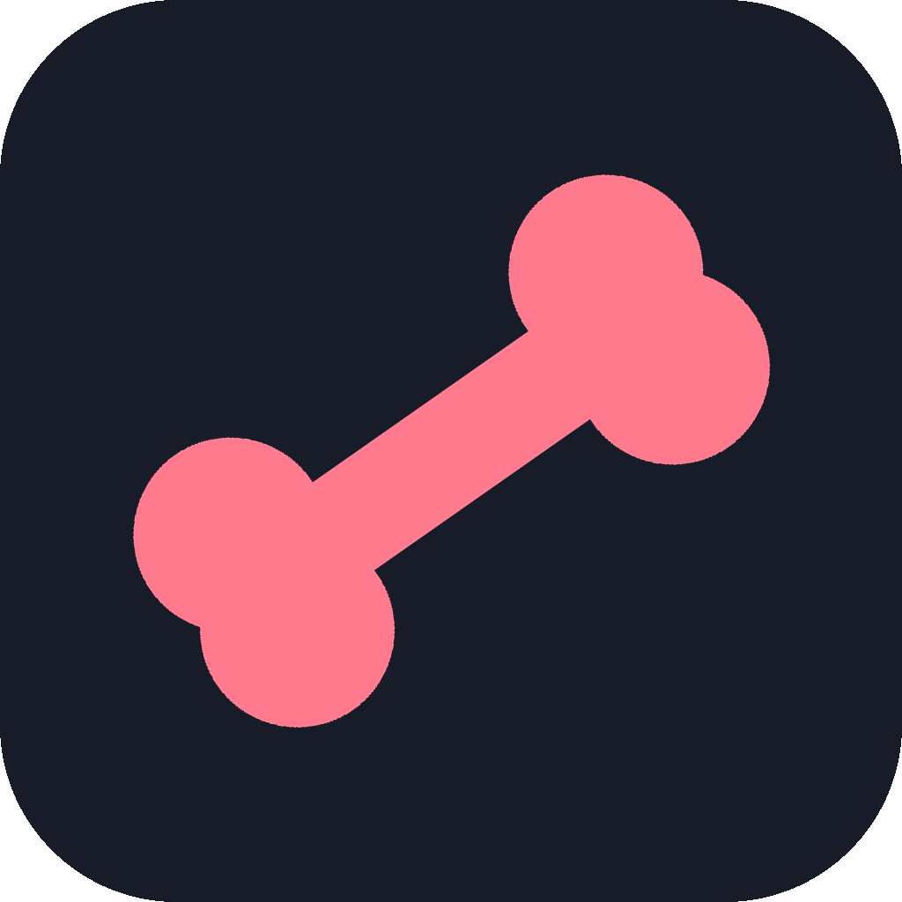
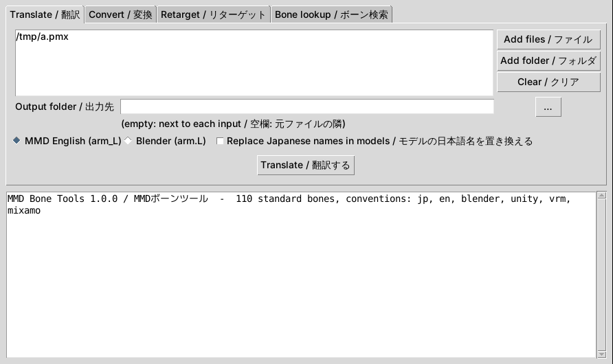

MMD Bone Tools
Translate Japanese MMD bone names to English, map bones between MMD, Blender, Unity, VRM and Mixamo, and make any VMD motion fit any model.
Free and open source (MIT) · version 1.0.0 · no install needed · Any OS with Python 3.10+: pip install mmd-bone-tools

What it does
Japanese → English bone names
Translates bone, morph, material, display frame, rigid body and joint names in PMX/PMD models and VMD motions. 左腕 → arm_L, 右スカート前２ → skirt_front2_R.
Convert between rigs
Renames 110 standard bones between Japanese MMD, English MMD, Blender (arm.L), Unity Humanoid, VRM 1.0 and Mixamo.
Retarget VMD motions
Renames motion tracks to match a model and corrects A-pose / T-pose rest-pose differences, with automatic scaling.
Batch and zip downloads
Translates whole folders and extracts Japanese zip files without garbled (文字化け) file names.
Safe on your files
Only names change; everything else is written back byte for byte. Long names are fitted to VMD's 15-byte limit.
App, command line, library
A desktop app in English and Japanese, the mmdbt command, and a Python API.
How to use it
- Download the Windows zip from the latest release and unzip it.
- Run MMDBoneTools.exe, or drop .pmx/.pmd/.vmd files onto it.
- Pick Translate, Convert or Retarget and press the button. Results are saved next to the originals with an _en suffix.
Command line
mmdbt translate model.pmx --rename
mmdbt translate dance.vmd
mmdbt retarget dance.vmd --model model_en.pmx
mmdbt convert model.pmx --to unity
mmdbt lookup 上半身2
mmdbt unpack download.zip
mmdbt batch ~/Downloads/mmdFAQ
How do I translate MMD bone names from Japanese to English?
Open MMD Bone Tools, add the .pmx, .pmd or .vmd file and press Translate. On the command line run: mmdbt translate model.pmx --rename
Why doesn't my VMD motion move my model?
MMD applies motions by bone name. A motion with Japanese names (左腕) does not move a model with English names (arm_L). Run: mmdbt retarget motion.vmd --model model.pmx
How do I use MMD models and motions in Blender, Unity, VRChat or with Mixamo?
Convert the bone names with mmdbt convert model.pmx --to blender (or unity, vrm, mixamo), or export a bone map with mmdbt map model.pmx --to unity.
What are the English names of センター, 上半身, 下半身 and 足ＩＫ?
center, upper body, lower body and leg IK_L / leg IK_R. The full table is below.
Is it free?
Yes. It is open source under the MIT license.
MMD bone name table
Standard MMD bones in every supported naming convention. Left side shown; right side uses 右 / _R / .R / Right.
| Japanese MMD | English MMD | Blender | Unity Humanoid | VRM 1.0 | Mixamo |
|---|---|---|---|---|---|
| 全ての親 | master | master | – | – | – |
| センター | center | center | – | – | – |
| グルーブ | groove | groove | – | – | – |
| 腰 | waist | waist | – | – | – |
| 下半身 | lower body | lower_body | Hips | hips | mixamorig:Hips |
| 上半身 | upper body | upper_body | Spine | spine | mixamorig:Spine |
| 上半身2 | upper body2 | upper_body2 | Chest | chest | mixamorig:Spine1 |
| 上半身3 | upper body3 | upper_body3 | UpperChest | upperChest | mixamorig:Spine2 |
| 首 | neck | neck | Neck | neck | mixamorig:Neck |
| 頭 | head | head | Head | head | mixamorig:Head |
| 頭先 | head tip | head_tip | – | – | mixamorig:HeadTop_End |
| 両目 | eyes | eyes | – | – | – |
| 左目 | eye_L | eye.L | LeftEye | leftEye | mixamorig:LeftEye |
| あご | jaw | jaw | Jaw | jaw | – |
| 舌 | tongue | tongue | – | – | – |
| 腰キャンセル左 | waist cancel_L | waist_cancel.L | – | – | – |
| 左肩P | shoulderP_L | shoulderP.L | – | – | – |
| 左肩 | shoulder_L | shoulder.L | LeftShoulder | leftShoulder | mixamorig:LeftShoulder |
| 左肩C | shoulderC_L | shoulderC.L | – | – | – |
| 左腕 | arm_L | arm.L | LeftUpperArm | leftUpperArm | mixamorig:LeftArm |
| 左腕捩 | arm twist_L | arm_twist.L | – | – | – |
| 左腕捩1 | arm twist1_L | arm_twist1.L | – | – | – |
| 左腕捩2 | arm twist2_L | arm_twist2.L | – | – | – |
| 左腕捩3 | arm twist3_L | arm_twist3.L | – | – | – |
| 左ひじ | elbow_L | elbow.L | LeftLowerArm | leftLowerArm | mixamorig:LeftForeArm |
| 左手捩 | wrist twist_L | wrist_twist.L | – | – | – |
| 左手捩1 | wrist twist1_L | wrist_twist1.L | – | – | – |
| 左手捩2 | wrist twist2_L | wrist_twist2.L | – | – | – |
| 左手捩3 | wrist twist3_L | wrist_twist3.L | – | – | – |
| 左手首 | wrist_L | wrist.L | LeftHand | leftHand | mixamorig:LeftHand |
| 左ダミー | dummy_L | dummy.L | – | – | – |
| 左親指０ | thumb0_L | thumb0.L | LeftThumbProximal | leftThumbMetacarpal | mixamorig:LeftHandThumb1 |
| 左親指１ | thumb1_L | thumb1.L | LeftThumbIntermediate | leftThumbProximal | mixamorig:LeftHandThumb2 |
| 左親指２ | thumb2_L | thumb2.L | LeftThumbDistal | leftThumbDistal | mixamorig:LeftHandThumb3 |
| 左親指先 | thumb tip_L | thumb_tip.L | – | – | mixamorig:LeftHandThumb4 |
| 左人指１ | fore1_L | index1.L | LeftIndexProximal | leftIndexProximal | mixamorig:LeftHandIndex1 |
| 左人指２ | fore2_L | index2.L | LeftIndexIntermediate | leftIndexIntermediate | mixamorig:LeftHandIndex2 |
| 左人指３ | fore3_L | index3.L | LeftIndexDistal | leftIndexDistal | mixamorig:LeftHandIndex3 |
| 左人指先 | fore tip_L | index_tip.L | – | – | mixamorig:LeftHandIndex4 |
| 左中指１ | middle1_L | middle1.L | LeftMiddleProximal | leftMiddleProximal | mixamorig:LeftHandMiddle1 |
| 左中指２ | middle2_L | middle2.L | LeftMiddleIntermediate | leftMiddleIntermediate | mixamorig:LeftHandMiddle2 |
| 左中指３ | middle3_L | middle3.L | LeftMiddleDistal | leftMiddleDistal | mixamorig:LeftHandMiddle3 |
| 左中指先 | middle tip_L | middle_tip.L | – | – | mixamorig:LeftHandMiddle4 |
| 左薬指１ | third1_L | ring1.L | LeftRingProximal | leftRingProximal | mixamorig:LeftHandRing1 |
| 左薬指２ | third2_L | ring2.L | LeftRingIntermediate | leftRingIntermediate | mixamorig:LeftHandRing2 |
| 左薬指３ | third3_L | ring3.L | LeftRingDistal | leftRingDistal | mixamorig:LeftHandRing3 |
| 左薬指先 | third tip_L | ring_tip.L | – | – | mixamorig:LeftHandRing4 |
| 左小指１ | little1_L | little1.L | LeftLittleProximal | leftLittleProximal | mixamorig:LeftHandPinky1 |
| 左小指２ | little2_L | little2.L | LeftLittleIntermediate | leftLittleIntermediate | mixamorig:LeftHandPinky2 |
| 左小指３ | little3_L | little3.L | LeftLittleDistal | leftLittleDistal | mixamorig:LeftHandPinky3 |
| 左小指先 | little tip_L | little_tip.L | – | – | mixamorig:LeftHandPinky4 |
| 左足 | leg_L | leg.L | LeftUpperLeg | leftUpperLeg | mixamorig:LeftUpLeg |
| 左ひざ | knee_L | knee.L | LeftLowerLeg | leftLowerLeg | mixamorig:LeftLeg |
| 左足首 | ankle_L | ankle.L | LeftFoot | leftFoot | mixamorig:LeftFoot |
| 左つま先 | toe_L | toe.L | – | – | mixamorig:LeftToe_End |
| 左足IK親 | leg IK parent_L | leg_IK_parent.L | – | – | – |
| 左足ＩＫ | leg IK_L | leg_IK.L | – | – | – |
| 左つま先ＩＫ | toe IK_L | toe_IK.L | – | – | – |
| 左足D | leg D_L | leg_D.L | – | – | – |
| 左ひざD | knee D_L | knee_D.L | – | – | – |
| 左足首D | ankle D_L | ankle_D.L | – | – | – |
| 左足先EX | toe EX_L | toe_EX.L | LeftToes | leftToes | mixamorig:LeftToeBase |